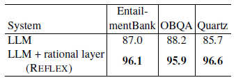

Consistency
By adding a rational layer to the baseline LLM, REFLEX significantly improves consistency among beliefs by resolving uncovered conflicts.
While large language models (LLMs) are proficient at question-answering (QA), it is not always clear how (or even if) an answer follows from their latent "beliefs". This lack of interpretability is a growing impediment to widespread use of LLMs. To address this, our goals are to make model beliefs and their inferential relationships explicit, and to resolve inconsistencies that may exist, so that answers are supported by interpretable chains of reasoning drawn from a consistent network of beliefs. Our approach, which we call REFLEX, is to add a rational, self-reflecting layer on top of the LLM. First, given a question, we construct a belief graph using a backward-chaining process to materialize relevant model beliefs (including beliefs about answer candidates) and their inferential relationships. Second, we identify and minimize contradictions in that graph using a formal constraint reasoner. We find that REFLEX significantly improves consistency (by 8%-11% absolute) without harming overall answer accuracy, resulting in answers supported by faithful chains of reasoning drawn from a more consistent belief system. This suggests a new style of system architecture in which an LLM extended with a rational layer can provide an interpretable window into system beliefs, add a systematic reasoning capability, and repair latent inconsistencies present in the LLM.
While large language models (LLMs) are impressive at question-answering (QA), it is not always clear how (or even if) an answer follows from their latent "beliefs" about the world, or whether the LLM even has a coherent internal belief system. This general opacity is a growing impediment to widespread use of LLMs, e.g., in critical applications such as medicine, law, and hiring decisions, where properties of explainability, interpretability, and trust are paramount. Our goal is to help alleviate such opacity by constructing an explicit representation of system beliefs and their inferential relationships (including to answer candidates), so that answers are supported by interpretable chains of reasoning. These constructed belief graphs form a rational layer above the LLM explaining how answers follow from beliefs, and provide a window into some of the latent contents of the model, potentially helping users understand and trust model answers.
In addition, when we do this, we find such graphs expose latent inconsistencies in the model's beliefs. We show how such inconsistencies can be resolved using constraint satisfaction techniques. When we do this, the rational layer becomes not just a window onto the model, but an active reasoning component in its own right in a larger, overall system, comprising the (frozen) LLM plus rational layer. We show this results in a more consistent set of beliefs in the overall system, without harming overall answer accuracy (although some individual answers may change). The result is answers supported by faithful, system-believed chains of reasoning drawn from a consistent belief system.
By adding a rational layer to the baseline LLM, REFLEX significantly improves consistency among beliefs by resolving uncovered conflicts.
REFLEX's belief revision in the rational layer preserves overall QA accuracy.
REFLEX is an approach in which an explicit, interpretable representation of their beliefs and their relationships is constructed, and which can be reasoned over. It adds a rational layer above the LLM, providing a window into system beliefs, and allowing latent inconsistencies in the LLM alone to be repaired. Our implementation shows that belief consistency of the overall system is significantly improved, without harming answer accuracy, resulting in answers supported by interpretable chains of reasoning drawn from a more consistent belief system. This is an important step towards improving confidence in system behavior, and towards trustable deployment of LLMs in practical applications.
@inproceedings{Kassner2023LanguageMW,
title={Language Models with Rationality},
author={Nora Kassner and Oyvind Tafjord and Ashish Sabharwal and Kyle Richardson and Hinrich Sch{\"u}tze and Peter Clark},
booktitle={EMNLP},
year={2023}
}